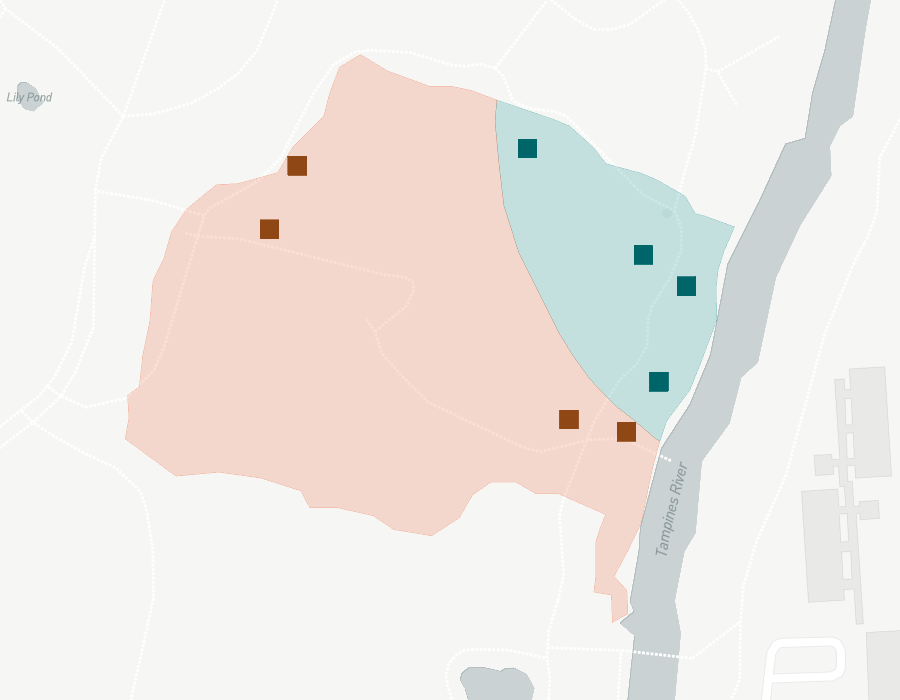
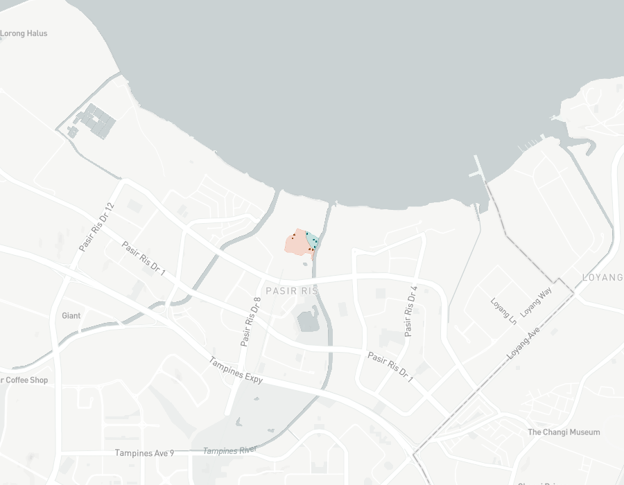
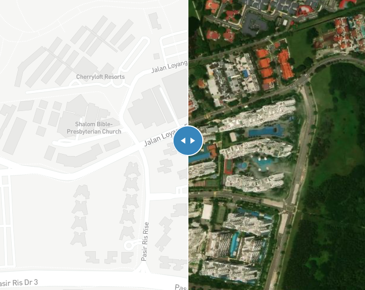
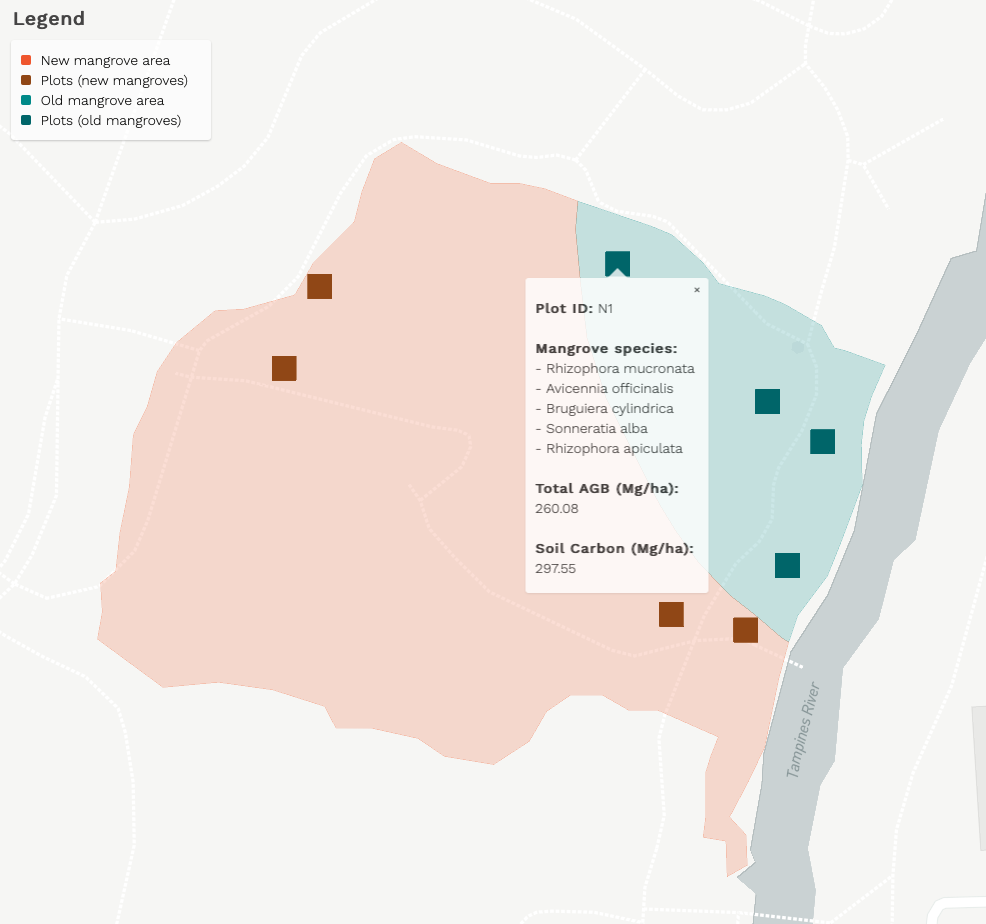
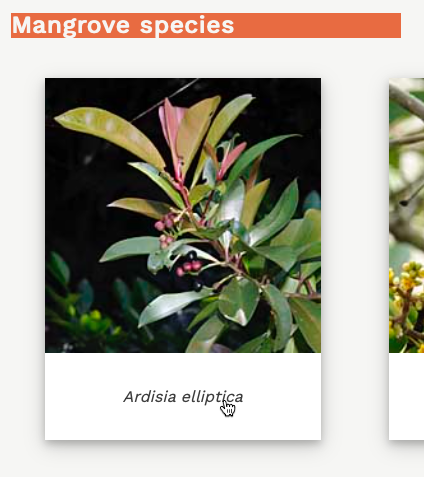

SGMangroves Web Map
Applications of SGMangroves
The purpose of this SGMangroves web map is to provide users with a comprehensive overview of Singapore's mangroves, including their geographical location, flora and fauna species, biomass, and more.
While SGMangroves currently provides information for Pasir Ris mangroves only, this can be further extended to all mangroves in Singapore, including those at Pulau Ubin, Sungei Buloh, Pulau Tekong, Pulau Semakau, and many more. Although TreesSG by NParks serves a similar purpose, it does not currently provide information for mangroves including their geographical location, species, and biomass.
Hence, SGMangroves can serve as an extension to TreesSG, made publicly available so as to generate public interest, promote local tourism, aid in academic research, and inform policymakers of potential areas for conservation and rehabilitation.
For further enquiries, please contact us at sgmangroves@gmail.com.
Pasir Ris Mangroves
Located just a 10 minute walk from Pasir Ris MRT, Pasir Ris Park is home to a carefully preserved six-hectare mangrove forest arranged along various trails and boardwalk networks located on the south-eastern side of the park1. This mangrove forest also attracts bird enthusiasts from all over Singapore to observe the various birds in their natural environment1. Compared to mangroves in other parts of Singapore, such as those in Sungei Buloh, the Pasir Ris mangroves have a lower biomass carbon density as they are collectively smaller, thinner, and more heavily disturbed2. Furthermore, much of the mangroves here are medium age due to land reclamantion in the late 1970s and mangrove replanting efforts in the late 1980s2. Currently, Pasir Park is still carrying out tree planting works in its mangrove forest, warmly inviting volunteers from all over to take part in the #OneMillionTreesSG movement3.
How to use this web map
- Use your mouse or trackpad to zoom in/out.  
- Use the vertical swiper to swipe between digital/satellite view. 
- Click on any square plot to view biological information. 
- Click on any plant species below to view more information. 
Mangrove species


References
- https://www.nparks.gov.sg/gardens-parks-and-nature/parks-and-nature-reserves/pasir-ris-park
- Friess, D. A., Richards, D. R., Phang, V. X. H. (2015). Mangrove forests store high densities of carbon across the tropical urban landscape of Singapore. Urban Ecosystems 19, 795-810. https://doi.org/10.1007/s11252-015-0511-3
- https://www.nparks.gov.sg/treessg/one-million-trees-movement/upcoming-activities
- http://www.wildsingapore.com/wildfacts/index.html
Image references
- http://www.wildsingapore.com/wildfacts/plants/coastal/ardisia/elliptica.htm
- http://www.wildsingapore.com/wildfacts/plants/mangrove/avicennia/alba.htm"
- http://www.wildsingapore.com/wildfacts/plants/mangrove/avicennia/officinalis.htm
- http://www.wildsingapore.com/wildfacts/plants/mangrove/avicennia/rumphiana.htm
- http://www.wildsingapore.com/wildfacts/plants/mangrove/bruguiera/gymnorrhiza.htm
- http://www.wildsingapore.com/wildfacts/plants/mangrove/bruguiera/cylindrica.htm
- http://www.wildsingapore.com/wildfacts/plants/mangrove/bruguiera/parviflora.htm
- http://www.wildsingapore.com/wildfacts/plants/mangrove/ceriops/tagal.htm
- http://www.wildsingapore.com/wildfacts/plants/mangrove/excoecaria/excoecaria.htm
- http://www.wildsingapore.com/wildfacts/plants/coastal/hibiscus/tiliaceus.htm
- http://www.wildsingapore.com/wildfacts/plants/mangrove/rhizophora/apiculata.htm
- http://www.wildsingapore.com/wildfacts/plants/mangrove/rhizophora/mucronata.htm
- http://www.wildsingapore.com/wildfacts/plants/mangrove/rhizophora/stylosa.htm
- http://www.wildsingapore.com/wildfacts/plants/mangrove/scyphiphora/hydrophyllacea.htm
- http://www.wildsingapore.com/wildfacts/plants/mangrove/sonneratia/alba.htm